| 07/05/2025 |
El tema central del día es la preocupación por el futuro del Tratado entre México, Estados Unidos y Canadá (T-MEC). Claudia Sheinbaum, presidenta de México, reafirmó que hasta ahora no hay señales de que el acuerdo vaya a desaparecer, a pesar de los comentarios del expresidente estadounidense Donald Trump sobre renegociarlo. Sheinbaum destacó que México está preparado para cualquier eventualidad y enfatizó la importancia de mantener el diálogo entre las naciones involucradas.
Otro tema relevante es el decomiso de tres millones de pastillas de fentanilo en Estados Unidos, celebrado por Sheinbaum como un ejemplo de colaboración efectiva entre ambos países en la lucha contra el narcotráfico. La presidenta destacó la relevancia de la operación, subrayando que también existe delincuencia organizada en Estados Unidos, lo que resalta la importancia de la cooperación bilateral en estos asuntos críticos.
Finalmente, se discutió el nombramiento de Adrián Rubalcava como nuevo director del Metro de la Ciudad de México. Sheinbaum pidió dar una oportunidad al exfuncionario priista, destacando su potencial para liderar el sistema de transporte capitalino. Este nombramiento ocurre en un contexto donde el Metro enfrenta desafíos operativos y de seguridad, lo que hace que la elección de su director sea un tema de interés público. |
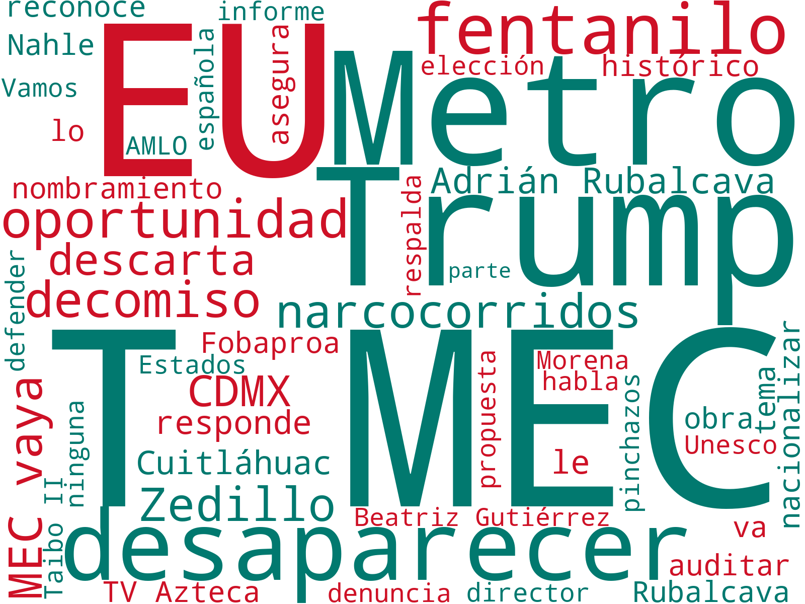 |
| 06/05/2025 |
El tema central del día se enfoca en las relaciones diplomáticas entre México y Estados Unidos bajo la administración de Claudia Sheinbaum, quien asegura que no hay fractura en las relaciones a pesar de las declaraciones del expresidente Donald Trump sobre el narcotráfico en México. Sheinbaum enfatiza la importancia de la cooperación bilateral en materia de seguridad y celebra el reconocimiento del tráfico de armas desde Estados Unidos hacia México como un paso histórico.
Otro tema destacado es la situación financiera de Pemex, donde Sheinbaum informa que se ha pagado cerca del 60% de los adeudos con proveedores, lo que refleja un avance gradual en la gestión de la deuda de la empresa estatal. Además, se discute la reforma a la Ley de Telecomunicaciones, donde Sheinbaum subraya que no se afectará la libertad de expresión, prometiendo un parlamento abierto para discutir los cambios.
En el ámbito social, Sheinbaum presenta un plan de recuperación de viviendas, destacando su intención de regularizar 933 mil viviendas a nivel nacional. Asimismo, se menciona su disposición a dialogar con madres buscadoras, lo que subraya su compromiso con temas de derechos humanos. Estos temas reflejan un enfoque integral en la administración de Sheinbaum, abarcando desde asuntos económicos hasta sociales y de seguridad. |
|
| 05/05/2025 |
El tema central del día gira en torno a la relación entre México y Estados Unidos, destacando la negativa de la presidenta Claudia Sheinbaum a aceptar la oferta de Donald Trump de enviar tropas estadounidenses a México para combatir a los cárteles. Trump criticó la decisión, afirmando que Sheinbaum teme a los cárteles, mientras que Sheinbaum enfatizó que no desea abrir un debate mediático y que la comunicación con Estados Unidos es fluida.
Otro asunto relevante es la conmemoración del 163 aniversario de la Batalla de Puebla, donde Sheinbaum destacó la soberanía e independencia de México. En la ceremonia, la presidenta pidió a los militantes de Morena no caer en prácticas similares a las del PRI y reafirmó su compromiso con la historia y valores del país.
En el ámbito económico, se resalta un plan de Sheinbaum para impulsar las industrias textil y del acero, buscando fortalecer la economía mexicana y generar empleo. Además, se anunció una inversión importante en el "Plan Integral para el Oriente del Estado de México", que incluye mejoras en infraestructura y servicios básicos. |
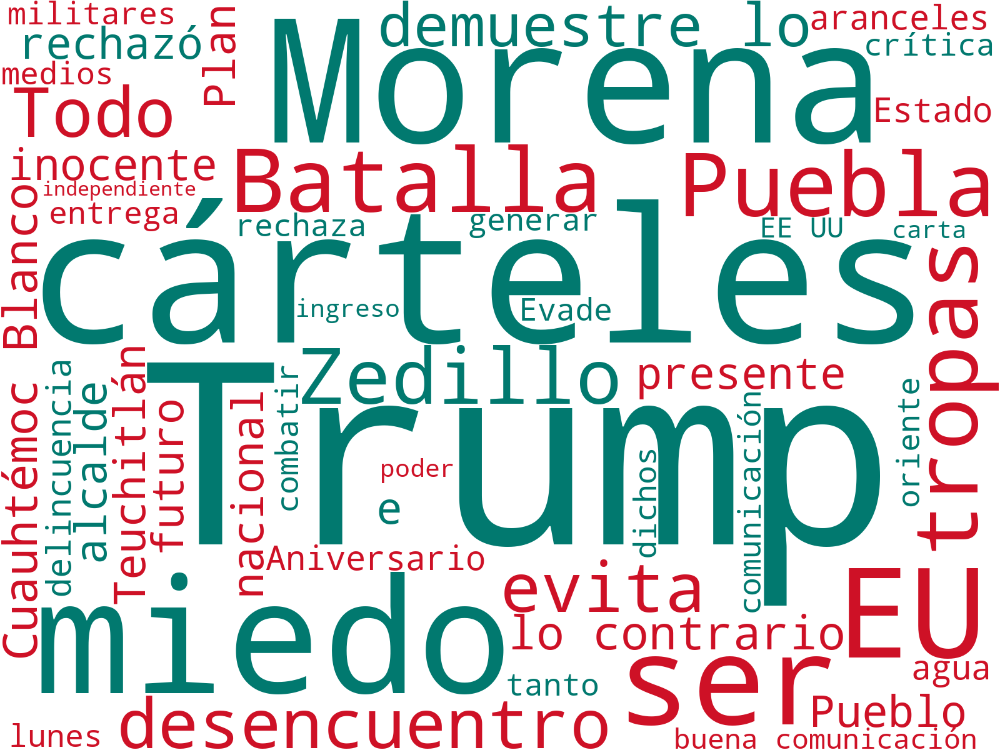 |
| 04/05/2025 |
El tema central del día es el lanzamiento del "Plan Integral para el Oriente del Estado de México" por parte de Claudia Sheinbaum, presidenta de México, y Delfina Gómez, en Tlalnepantla, Estado de México. Este plan busca transformar la región con una inversión de 48 mil millones de pesos e incluye proyectos como la inauguración de una universidad, un hospital y el Trolebús Chalco-Santa Martha, destacando el enfoque en infraestructura y servicios básicos.
Otro tema relevante es la postura de Claudia Sheinbaum frente a la propuesta del expresidente de EE. UU., Donald Trump, de enviar tropas estadounidenses a México para combatir el narcotráfico. Sheinbaum rechazó firmemente la oferta, enfatizando que nunca permitirán la presencia de militares extranjeros en territorio mexicano, reafirmando la soberanía nacional.
Por último, se destaca la reunión del partido Morena, donde se abordaron las recomendaciones de Sheinbaum para erradicar el nepotismo, promover la honestidad y evitar la colusión con la delincuencia. La presidenta instó a mantener la unidad y cercanía con el pueblo, subrayando la importancia de la organización desde abajo como fuerza del partido. |
|
| 03/05/2025 |
En el ámbito político, la presidenta de México, Claudia Sheinbaum, ha criticado al expresidente Ernesto Zedillo, acusándolo de haber implementado políticas autoritarias durante su mandato. Este enfrentamiento verbal resalta las tensiones históricas en México sobre el legado de los exmandatarios y la percepción de autoritarismo en el país. Asimismo, Sheinbaum ha acusado a Zedillo de ser un represor, en un contexto de crecientes discusiones sobre el papel de las políticas de seguridad actuales y pasadas en el país.
En un tema de seguridad binacional, se destaca la negativa de Sheinbaum a la propuesta del expresidente de Estados Unidos, Donald Trump, quien buscaba enviar tropas estadounidenses a México para combatir el narcotráfico. La presidenta ha dejado claro que no permitirá la presencia de soldados extranjeros en territorio mexicano, subrayando la soberanía nacional en la gestión de la seguridad interna. Este tema se sitúa en el contexto de las presiones internacionales y las complejidades de la lucha contra los cárteles.
Por otro lado, en materia de infraestructura, Sheinbaum ha supervisado avances significativos en proyectos de transporte y drenaje en el Estado de México y la Ciudad de México. Entre ellos, destaca la supervisión de las obras del Tren Insurgente y la interconexión en la estación Observatorio, así como la inauguración de una Universidad del Bienestar en Lago de Texcoco. Estos desarrollos son parte de un esfuerzo más amplio para mejorar la conectividad y la infraestructura educativa en la región, reflejando el compromiso del gobierno con el progreso socioeconómico y la modernización del país. |
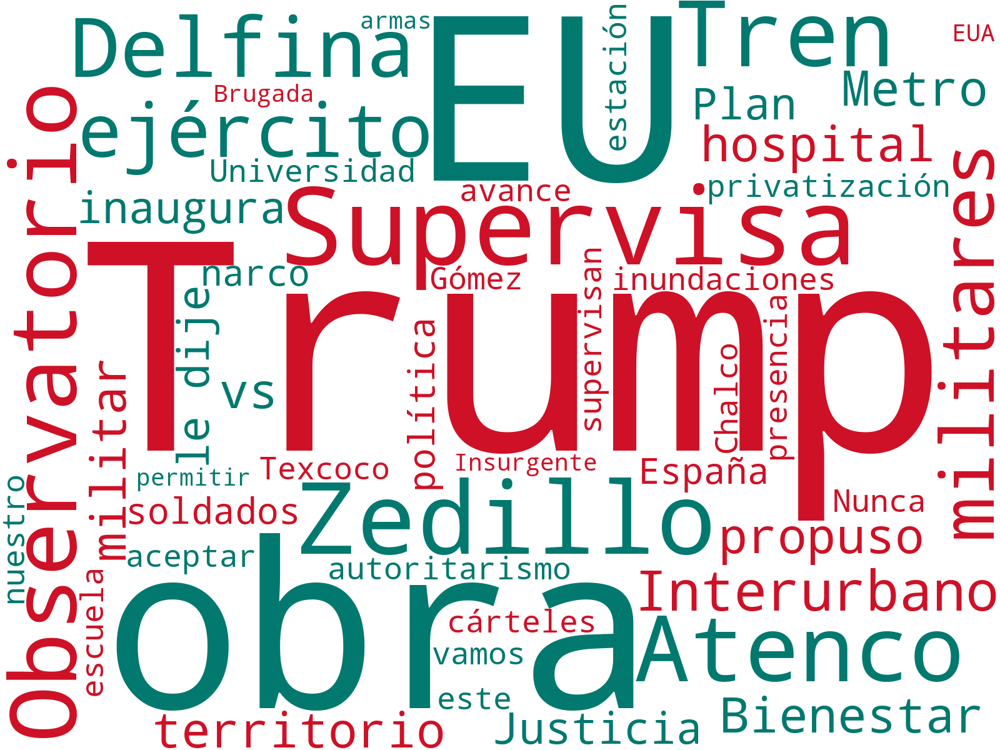 |
| 02/05/2025 |
En un importante desarrollo económico, Claudia Sheinbaum celebró la eliminación de aranceles para las autopartes mexicanas en Estados Unidos. Este acuerdo, que forma parte del T-MEC, fue recibido positivamente por la mandataria, quien destacó su importancia para el sector automotriz mexicano, un pilar de la economía nacional. El anuncio se realizó en el contexto de una conversación con el expresidente Donald Trump, en la cual se discutieron temas de comercio bilateral.
Paralelamente, Sheinbaum está en medio de una controversia política con el expresidente Ernesto Zedillo. Las tensiones se centran en acusaciones sobre el manejo del Fobaproa durante el mandato de Zedillo, así como en la defensa de Sheinbaum de las políticas energéticas y sociales de su administración y la de AMLO. El conflicto ha generado un intercambio de declaraciones públicas, con ambos líderes defendiendo sus posturas respecto a la gestión gubernamental.
Por otro lado, Sheinbaum abordó la implementación de una jornada laboral de 40 horas en México. La presidenta explicó que, aunque se avanza en este sentido, la aplicación será gradual para permitir una transición adecuada. Esta medida es parte de un esfuerzo más amplio para mejorar las condiciones laborales en el país, destacando la necesidad de mesas de diálogo para su implementación efectiva en los próximos años. |
|
| 01/05/2025 |
La presidenta Claudia Sheinbaum sostuvo una llamada con el expresidente de Estados Unidos, Donald Trump, para discutir temas económicos, centrando la conversación en mejorar el balance comercial entre México y Estados Unidos. Si bien no se alcanzó un acuerdo específico, ambos líderes acordaron continuar trabajando en fortalecer el comercio bilateral, lo que Sheinbaum calificó como una señal positiva para la relación entre ambos países.
En otro frente, la presidenta Sheinbaum destacó la transición hacia una reducción gradual de la jornada laboral a 40 horas semanales en México, contemplando su implementación completa para 2030. Esta medida, discutida con líderes sindicales, busca beneficiar a los trabajadores y se aplicará de manera consensuada con empresarios y trabajadores en mesas de trabajo.
Además, la mandataria continúa su confrontación con el expresidente Ernesto Zedillo, centrándose en el caso Fobaproa, al cual Sheinbaum ha calificado como un acto que benefició a empresarios y políticos. Esta disputa resucita viejas polémicas sobre el manejo económico del país en administraciones anteriores, y Sheinbaum ha sugerido investigar posibles nexos de la esposa de Zedillo con el narcotráfico. |
|
| 30/04/2025 |
El tema central del día es la celebración por parte de Claudia Sheinbaum de nuevos decretos de Donald Trump que suavizan los aranceles automotrices, lo que representa un avance para el sector automotriz en México. La presidenta destaca que estas medidas ofrecen una ventaja competitiva adicional para el país, ayudando a mantener la estabilidad en el sector y asegurando que ninguna empresa automotriz se retire de México. Este desarrollo se produce en el contexto de las tensiones comerciales entre México y Estados Unidos, con Trump implementando medidas arancelarias que afectan a múltiples sectores.
Otro tema destacado es el Día del Niño, celebrado durante la conferencia matutina de Sheinbaum. La presidenta dedicó un mensaje especial a la infancia de México, enfatizando su importancia como el presente del país. Este evento incluyó sorpresas y proyectos enfocados en el bienestar de los niños, destacando la importancia del diálogo y la escucha activa hacia las futuras generaciones. Esta celebración también sirve como plataforma para abordar otros asuntos de interés social, como la situación de los recursos hídricos y los avances en proyectos de infraestructura.
En otro frente, la pugna entre Claudia Sheinbaum y Ernesto Zedillo continúa, centrada en temas económicos y políticos. Sheinbaum ha señalado a Zedillo por su responsabilidad en la crisis económica del pasado y ha respondido a cuestionamientos relacionados con el Fobaproa. Por su parte, Zedillo ha criticado a Sheinbaum, exigiendo transparencia sobre el apoyo que recibe AMLO y acusándola de contribuir a la erosión de la democracia. Esta disputa resalta las tensiones políticas actuales y el debate sobre políticas económicas pasadas y presentes en México. |
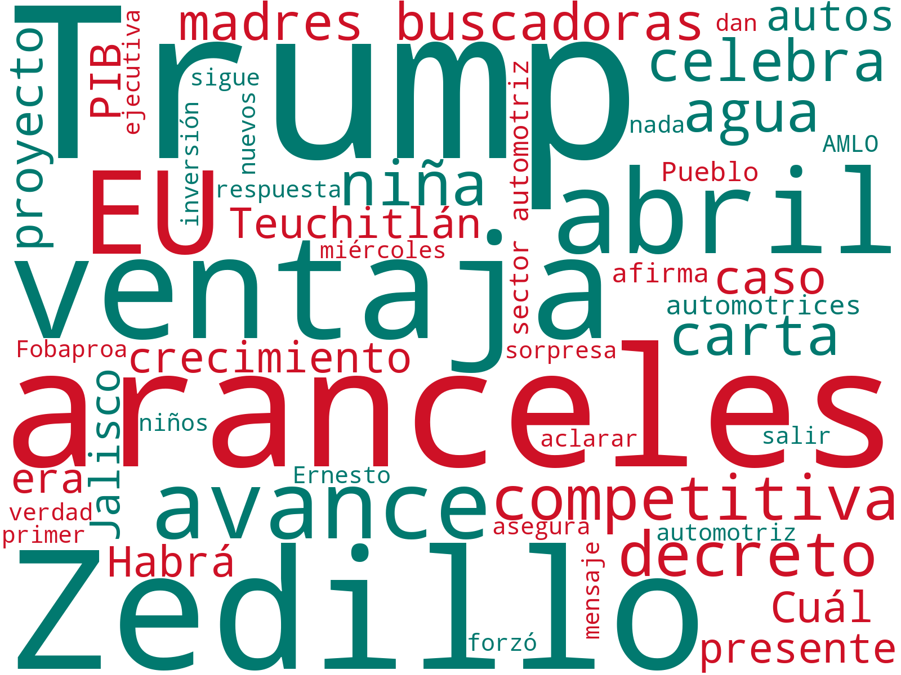 |
| 29/04/2025 |
El tema central del día es la entrega de remanentes del Banco de México al gobierno de Claudia Sheinbaum. El banco central ha anunciado que entregará cerca de 18 mil millones de pesos, una cifra que Sheinbaum considera menor de lo esperado. Este remanente se generó en el año 2024 y su uso será informado por el gobierno. La entrega de estos recursos es crucial para las finanzas públicas y la implementación de políticas económicas.
Otro tema destacado es la pugna entre Claudia Sheinbaum y el expresidente Ernesto Zedillo. Sheinbaum ha criticado a Zedillo por decisiones pasadas que, según ella, provocaron la crisis económica de 1994. Zedillo, por su parte, ha respondido a las acusaciones asegurando que Sheinbaum y el partido Morena socavan la democracia. Esta confrontación incluye además la discusión sobre la posible investigación de la pensión vitalicia de Zedillo.
Finalmente, el acuerdo entre México y Estados Unidos sobre el agua es un aspecto importante de la jornada. Claudia Sheinbaum ha confirmado que se suministrará agua al país vecino hasta donde sea posible, sin comprometer el consumo interno. Además, la presidenta ha resaltado su comunicación con el gobierno de Trump en sus primeros 100 días, abordando también el tema de los aranceles y los compromisos de ambos países para cooperar en diversos ámbitos. |
|
| 28/04/2025 |
El tema central del día es la respuesta de la presidenta Claudia Sheinbaum a las críticas del expresidente Ernesto Zedillo sobre la elección judicial en México. Durante su conferencia matutina, Sheinbaum calificó irónicamente a Zedillo como un "paladín de la democracia", recordando su pasado autoritario. Este intercambio refleja tensiones en torno a la reciente reforma judicial impulsada por el gobierno actual.
Otro tema destacado es la defensa de Sheinbaum hacia los migrantes mexicanos en Estados Unidos, a quienes considera víctimas de criminalización racista. La presidenta también exhortó a los políticos estadounidenses a no utilizar a México en sus campañas electorales, reafirmando que "México no es piñata de nadie". Este mensaje llega en un contexto de crecientes tensiones migratorias y políticas entre ambos países.
Por último, Sheinbaum anunció avances significativos en infraestructura, como el inicio de la construcción del Tren México-Querétaro, que promete estar terminado en dos años y medio. Además, supervisó el progreso del Tren Ligero de Campeche, que se conectará con el Tren Maya. Estas obras son parte de una estrategia para impulsar el crecimiento económico y mejorar la conectividad en el país. |
|
| 27/04/2025 |
La presidenta de México, Claudia Sheinbaum, ha respondido firmemente a las críticas de políticos estadounidenses afirmando que "México no es piñata de nadie". Esta declaración surge en el contexto de las elecciones en Estados Unidos, donde algunos candidatos han utilizado a México como tema de campaña. Sheinbaum ha instado a los políticos estadounidenses a centrarse en sus propios problemas, mientras enfatiza que su gobierno no planea endeudarse, en respuesta a las proyecciones del FMI sobre la deuda pública mexicana.
En el ámbito de desarrollo económico, Sheinbaum ha anunciado la ampliación del Puerto Progreso, con el fin de triplicar su capacidad. Este proyecto forma parte de un esfuerzo más amplio para impulsar el crecimiento económico en la región. Además, se ha iniciado la construcción de infraestructura de carga para el Tren Maya, con una inversión significativa que busca fortalecer el transporte y la logística en el sureste del país.
Por otro lado, en Campeche, Sheinbaum ha lanzado varios programas de bienestar, incluyendo la inauguración de una planta pasteurizadora y el lanzamiento de la "leche para el bienestar", cuyo objetivo es mejorar la nutrición infantil. También se ha inaugurado un centro de atención en la zona arqueológica de Xcalumkín, lo que resalta el enfoque de su administración en el desarrollo social y la promoción del turismo cultural en la región. |
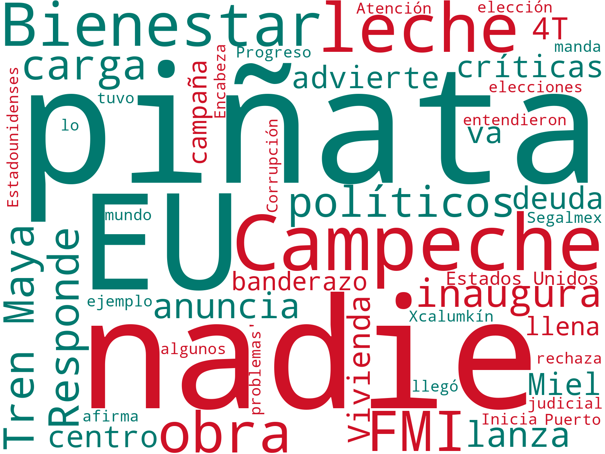 |
| 26/04/2025 |
El tema central del día es el inicio de las obras del Tren Maya de carga en Yucatán, liderado por la presidenta Claudia Sheinbaum. Este proyecto busca fortalecer el desarrollo del sureste mexicano mediante la implementación de infraestructura ferroviaria, un esfuerzo que Sheinbaum supervisa personalmente junto al gobernador de Yucatán, impulsando a la región como un nuevo destino turístico de relevancia mundial.
Paralelamente, Sheinbaum ha enviado una iniciativa para la creación de una Comisión Nacional Antimonopolio, que sustituiría a la actual Cofece. Esta medida busca reformar el sector de telecomunicaciones, aunque el Senado ha decidido aplazar la votación sobre la nueva ley propuesta, tras una petición de la mandataria para abrir un diálogo.
Además, destaca el Programa Nacional de Vivienda impulsado por Sheinbaum, que promete construir casas de 60 metros cuadrados, reemplazando las pequeñas viviendas de Infonavit. Este programa forma parte de un esfuerzo mayor por mejorar las condiciones habitacionales en lugares como Cancún, donde Sheinbaum ha iniciado una gira para supervisar proyectos clave. |
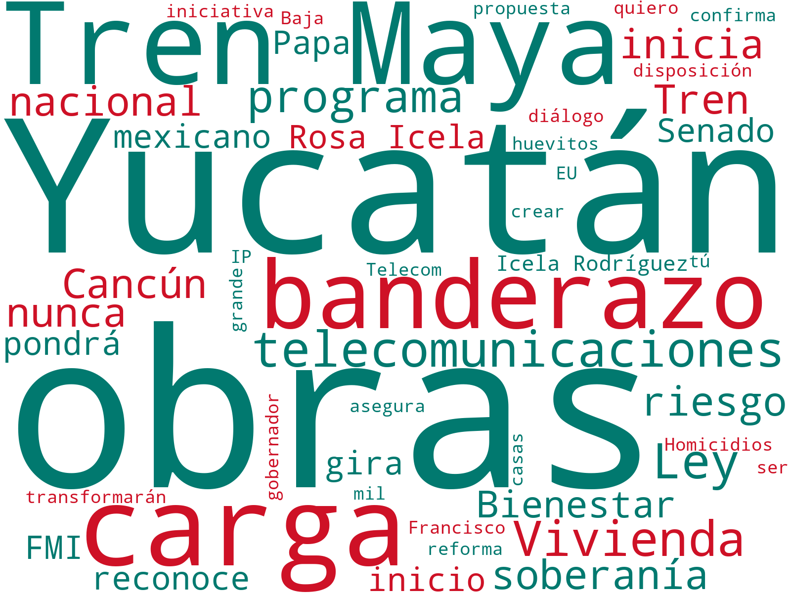 |
| 25/04/2025 |
La presidenta Claudia Sheinbaum ha propuesto cambios significativos a la reforma de la Ley de Telecomunicaciones en México, en respuesta a las críticas sobre posibles implicaciones de censura. Sheinbaum busca modificar la redacción de un artículo polémico que podría afectar a las plataformas digitales. En este contexto, la iniciativa será debatida en el Senado, donde se ha decidido posponer su votación para permitir un análisis más exhaustivo.
Además, Sheinbaum ha presentado una nueva Ley de Competencia Económica, que incluye la creación de una Comisión Nacional Antimonopolio, destinada a sustituir y ampliar las funciones de la actual Cofece. Esta propuesta se enmarca en los esfuerzos de su gobierno por reforzar la regulación y competencia en el mercado mexicano, buscando evitar prácticas monopólicas y fomentar un entorno económico más justo y competitivo.
En otros eventos, Sheinbaum ha destacado la estabilidad de la economía del país, pese a una reciente baja en los precios del petróleo. También ha anunciado una inversión significativa de Grupo Modelo y el impulso de 100 mil empleos adicionales como parte del Plan México. Simultáneamente, supervisará obras en Yucatán y en el Tren Maya, lo que forma parte de su agenda de desarrollo y crecimiento económico en diversas regiones del país. |
|
| 24/04/2025 |
El tema central del día gira en torno a la propuesta de Claudia Sheinbaum sobre una nueva Ley de Telecomunicaciones y Radiodifusión en México, que busca prohibir la propaganda de gobiernos extranjeros. La iniciativa ha generado un debate sobre posibles implicaciones de censura, al ser criticada por la oposición y algunas organizaciones que comparan el proyecto con medidas en países como Venezuela y Nicaragua. A pesar de las críticas, las comisiones del Senado han aprobado la propuesta, mientras Sheinbaum asegura que no se pretende censurar, atribuyendo las preocupaciones a un "error de redacción" y sugiriendo ajustes.
Otro asunto relevante es la situación económica en México, donde Sheinbaum defiende la estabilidad del país ante proyecciones negativas de organismos internacionales. La presidenta sostiene que la economía nacional no está en recesión técnica, destacando la solidez de la moneda y el crecimiento en sectores como la industria aeroespacial. Sin embargo, el director del FMI contradice esta visión, afirmando que México es uno de los países más afectados por los aranceles, y prevé una recesión.
Finalmente, destacan los narcobloqueos recientes en los estados de Michoacán, Jalisco y Guanajuato, que según Sheinbaum, fueron resultado de un conflicto entre dos grupos, sin detenciones reportadas. Este tema se vincula con su petición a la Fiscalía General de la República para investigar a candidatos judiciales con presuntos vínculos con el crimen organizado, subrayando que las denuncias son mínimas. La situación de seguridad en estas regiones sigue siendo una preocupación significativa para el gobierno y el sector empresarial. |
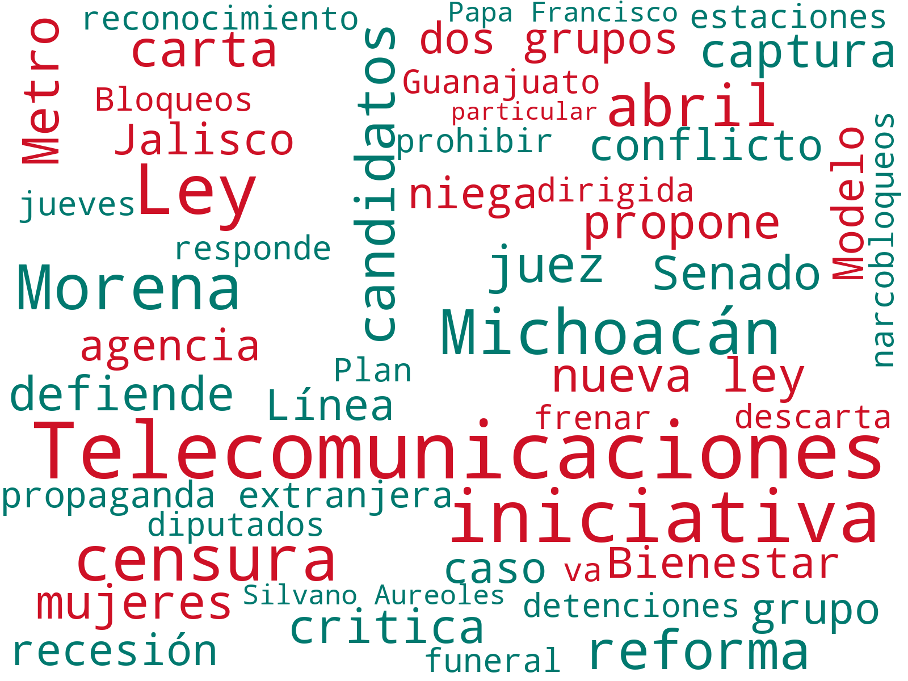 |
| 23/04/2025 |
El tema central del día es la reapertura de estaciones de la Línea 1 del Metro de la Ciudad de México, encabezada por la presidenta Claudia Sheinbaum. Esta reinauguración, que incluye el tramo de Cuauhtémoc a Chapultepec, es un paso significativo en la mejora del transporte público en la capital del país. Sheinbaum asistió al evento junto con Clara Brugada, resaltando el compromiso del gobierno con la modernización de la infraestructura urbana.
Otro tema destacado es el impulso que Claudia Sheinbaum está dando al sector aeroespacial en México. En el contexto de la Feria Aeroespacial México 2025, inaugurada en Zumpango, Estado de México, la presidenta subrayó la importancia de fortalecer esta industria para el crecimiento económico del país. Sheinbaum destacó que México está entre los cinco países con mayor inversión extranjera en este sector, lo cual es crucial para el futuro económico nacional.
Finalmente, se aborda el ámbito judicial, donde Sheinbaum propone descalificar a candidatos con vínculos con el narcotráfico en las próximas elecciones judiciales. La presidenta instó al Tribunal Electoral a tomar medidas al respecto, asegurando que se necesitan pruebas concretas para proceder con las descalificaciones. Además, Sheinbaum envió una iniciativa al Congreso para eliminar trámites burocráticos, buscando simplificar procesos administrativos y mejorar la eficiencia gubernamental. |
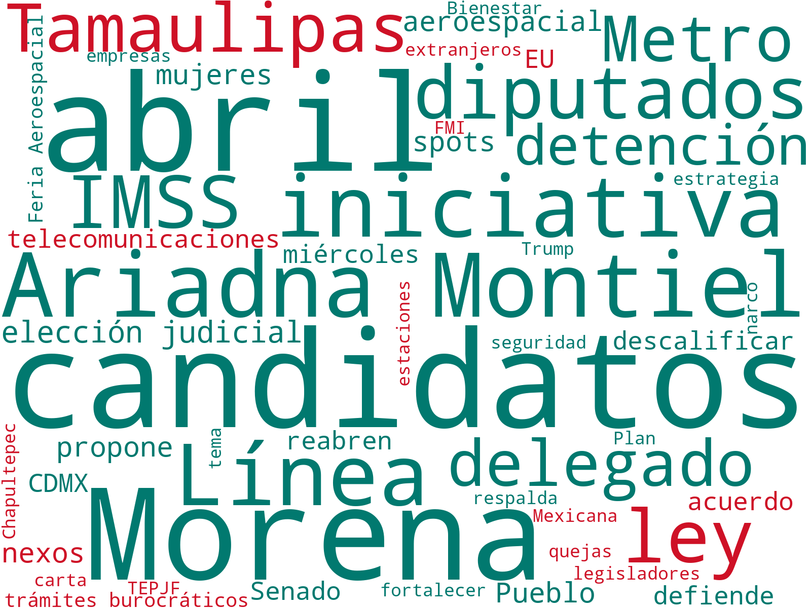 |
| 22/04/2025 |
El tema central del día es la respuesta de Claudia Sheinbaum a la previsión del Fondo Monetario Internacional (FMI) sobre una posible recesión económica en México en 2025. Sheinbaum desestima el pronóstico del FMI, confiando en el impulso del Plan México y destacando que los modelos económicos del gobierno no coinciden con las proyecciones del organismo internacional. Este debate económico se desarrolla en un contexto de tensiones comerciales con Estados Unidos, que ha lanzado spots antimigrantes en medios mexicanos, lo que Sheinbaum ha rechazado enérgicamente.
Otro tema destacado es la reforma que Sheinbaum busca impulsar para prohibir la propaganda extranjera en México, en respuesta a las campañas políticas de otros países que considera injerencistas. La propuesta ha generado un amplio debate en el Congreso, con la presidenta instando a su aprobación para proteger la soberanía nacional. En paralelo, Sheinbaum ha reiterado su compromiso con la transparencia y la legalidad al descartar acuerdos entre la Secretaría de Educación Pública y empresas de comida chatarra, subrayando los efectos nocivos de productos como la Coca-Cola.
Un tercer tema relevante es el homenaje que Claudia Sheinbaum rinde al Papa Francisco tras su fallecimiento. Aunque no asistirá a su funeral, enviará a Rosa Icela Rodríguez, titular de la Secretaría de Gobernación, en representación de México. Durante su conferencia matutina, Sheinbaum destacó el legado humanista y progresista del Papa Francisco, subrayando su trabajo en favor de los más necesitados y su impacto en la crítica social. Estos temas reflejan la agenda variada y los desafíos que enfrenta el gobierno de Sheinbaum en el contexto internacional y nacional. |
|
| 21/04/2025 |
El tema central del día es el fallecimiento del Papa Francisco, un suceso que ha resonado a nivel mundial. La presidenta de México, Claudia Sheinbaum, expresó su pesar por la pérdida del líder religioso argentino, destacando su legado como un humanista cercano a los pobres. Sheinbaum recordó su encuentro con el Papa en el Vaticano, describiéndolo como un momento especial que dejó una impresión duradera. Este evento ha movilizado a líderes globales para rendir homenaje a Francisco, destacando su impacto en la promoción de la paz y la igualdad.
En otro frente, las relaciones comerciales entre México y Estados Unidos están en el foco de atención, ya que Sheinbaum confirmó que aún no se ha alcanzado un acuerdo con el expresidente Donald Trump sobre los aranceles al acero y aluminio. La presidenta sigue dialogando para resolver estas disputas, que son cruciales para la economía mexicana. La falta de consenso subraya las tensiones comerciales persistentes entre ambos países y su potencial impacto en la economía regional.
Además, Sheinbaum se ha pronunciado en contra de una campaña antiinmigrante del gobierno estadounidense que se ha transmitido en la televisión mexicana. La presidenta ha anunciado una reforma para prohibir la propaganda extranjera en medios nacionales, calificando el contenido de discriminatorio. Esta iniciativa se suma a sus esfuerzos por simplificar los trámites burocráticos en México, lo que busca facilitar las inversiones y mejorar el entorno económico del país. |
 |
| 20/04/2025 |
El 20 de abril de 2025, uno de los temas destacados es la reciente serie de conferencias "La Mañanera del Pueblo" lideradas por Claudia Sheinbaum. Estas conferencias, realizadas los días 15 y 16 de abril, han captado la atención al abordar temas de interés nacional. Sheinbaum, en su rol de liderazgo, ha utilizado estas plataformas para interactuar directamente con la población, presentando sus planes y respondiendo a inquietudes ciudadanas, lo que subraya su enfoque participativo en la gestión pública.
Paralelamente, el Senado se encuentra en proceso de aprobar sin modificaciones el Plan de Seguridad propuesto por Sheinbaum. Este plan se centra en cuatro ejes principales que delinean la estrategia de seguridad para los próximos seis años. La propuesta ha sido discutida en el ámbito legislativo, destacándose por su enfoque integral en la seguridad ciudadana y sus implicaciones para la estabilidad económica y social del país.
Además, el contexto político y económico se ve influenciado por la continuidad de estas políticas y el respaldo legislativo que se anticipa. Los empresarios y analistas económicos están atentos a cómo estas medidas impactarán el clima de negocios y la inversión en México, considerando la importancia de la seguridad y la estabilidad para el desarrollo económico sostenido. En conjunto, estas noticias reflejan un momento clave en la administración de Sheinbaum, con potenciales repercusiones a nivel nacional. |
|
| 19/04/2025 |
El tema central del día se centra en la posible reducción de las tasas de interés por parte de los bancos en México. Esto surge tras una solicitud de la presidenta Claudia Sheinbaum, quien busca aliviar la carga financiera para los ciudadanos. Esta acción, de ser implementada, podría tener un impacto significativo en la economía nacional, facilitando el acceso al crédito y fomentando el consumo.
Otro asunto relevante es el avance del tren México-Pachuca, un proyecto de infraestructura clave para el país. La presidenta Sheinbaum ha mostrado los progresos de la obra, subrayando su importancia para mejorar el transporte y la conectividad en la región. Se espera que este tren esté operativo en 2026, marcando un hito en el desarrollo del transporte urbano en México.
Adicionalmente, se destaca el homenaje rendido por Sheinbaum en el aniversario del natalicio de Josefa Ortiz Téllez-Girón, conocida como "La Corregidora". Este reconocimiento a su valentía y dedicación se enmarca en una serie de actividades que la presidenta ha llevado a cabo durante el puente vacacional de Semana Santa, donde también compartió momentos personales con su familia, reflejando su compromiso con la historia y la cultura del país. |
|
| 18/04/2025 |
El tema central del día es la relación entre Claudia Sheinbaum y Donald Trump, destacando una reciente llamada telefónica que ambos calificaron de "muy productiva". En esta conversación, se abordaron temas como el tráfico de fentanilo, la migración y los aranceles, con un énfasis en la reducción del 70% en el tráfico de fentanilo de México a Estados Unidos, lo que representa un avance significativo en la lucha contra el narcotráfico.
Otro tema relevante es la construcción del tren México-Pachuca, un proyecto liderado por Sheinbaum que ha mostrado avances importantes. La mandataria ha compartido imágenes de la obra, subrayando su compromiso con el desarrollo de infraestructura. Se espera que este proyecto esté listo en aproximadamente año y medio, lo que podría tener un impacto positivo en la conectividad y la economía regional.
Además, Sheinbaum ha estado activa en redes sociales, compartiendo recuerdos personales y momentos destacados de su gestión, lo que refleja su estrategia de comunicación directa con el público. Estos esfuerzos se enmarcan en su papel como figura política prominente en México, mostrando un enfoque multifacético en sus actividades diarias y su relación con líderes internacionales. |
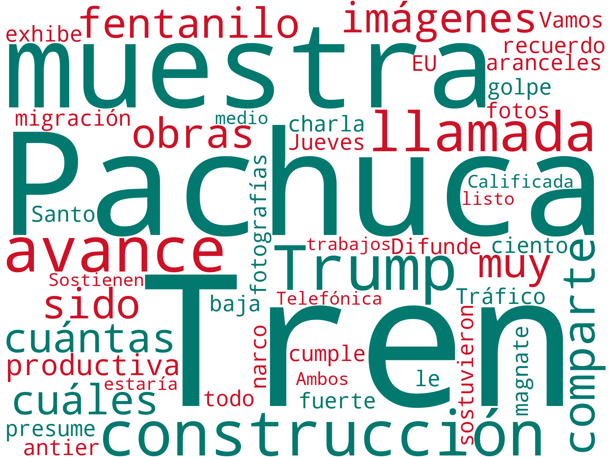 |
| 17/04/2025 |
El tema central del día es la conversación telefónica entre Claudia Sheinbaum, presidenta de México, y Donald Trump, presidente de Estados Unidos. Ambos líderes describieron la llamada como "muy productiva", sugiriendo avances en las negociaciones comerciales entre ambos países. Esta interacción coincide con un fortalecimiento del peso mexicano, que cerró en $19.70 respecto al dólar, mostrando una reacción positiva del mercado tras el diálogo entre los mandatarios.
Otro tema destacado es el reconocimiento internacional a Claudia Sheinbaum, quien fue incluida en la lista de las 100 personas más influyentes del mundo por la revista Time. Este reconocimiento destaca su liderazgo y relevancia en la política internacional, en un momento donde México busca fortalecer sus relaciones exteriores y su posición en el escenario global.
Un tercer tema importante es la gestión interna de Sheinbaum, incluyendo su enfoque en temas de seguridad y economía. Se discute la estrategia de seguridad que el Senado busca votar antes del 30 de abril, en la que se incluye el combate al narcotráfico, reflejado en la reducción del tráfico de fentanilo hacia Estados Unidos. Además, se mencionan iniciativas para mejorar la situación económica, como la compra emergente de medicamentos oncológicos y la coordinación con Estados Unidos en temas de comercio y agua. |
|
| 16/04/2025 |
El tema central del día es la decisión del gobierno mexicano de no reanudar relaciones diplomáticas con Ecuador mientras Daniel Noboa continúe en la presidencia. Claudia Sheinbaum ha expresado dudas sobre la legitimidad del triunfo electoral de Noboa y ha dejado en claro que México mantendrá esta postura hasta que haya un cambio en el liderazgo ecuatoriano. Esta situación tensa las relaciones diplomáticas entre ambos países y podría tener implicaciones en el comercio y la cooperación bilateral.
Otro tema destacado es la publicación del Plan Nacional de Desarrollo en el Diario Oficial de la Federación por parte de Claudia Sheinbaum, conocido como "Plan México". Este plan establece las prioridades y estrategias económicas para el sexenio, centrándose en temas como el abasto de agua, la regulación de narcocorridos y la mejora en la distribución de medicamentos. El plan ha suscitado diversas reacciones, incluida la crítica de la Coparmex, que lo ha calificado de contradictorio.
Finalmente, la inclusión de Claudia Sheinbaum en la lista de las 100 personas más influyentes del mundo por la revista Time resalta su impacto internacional. Sheinbaum ha respondido a este reconocimiento destacando que es un logro del pueblo mexicano y ha insistido en la necesidad de mantener los pies en la tierra. Esta mención subraya su papel en la política global y su influencia en la escena internacional, especialmente en el contexto de las relaciones entre México y Estados Unidos. |
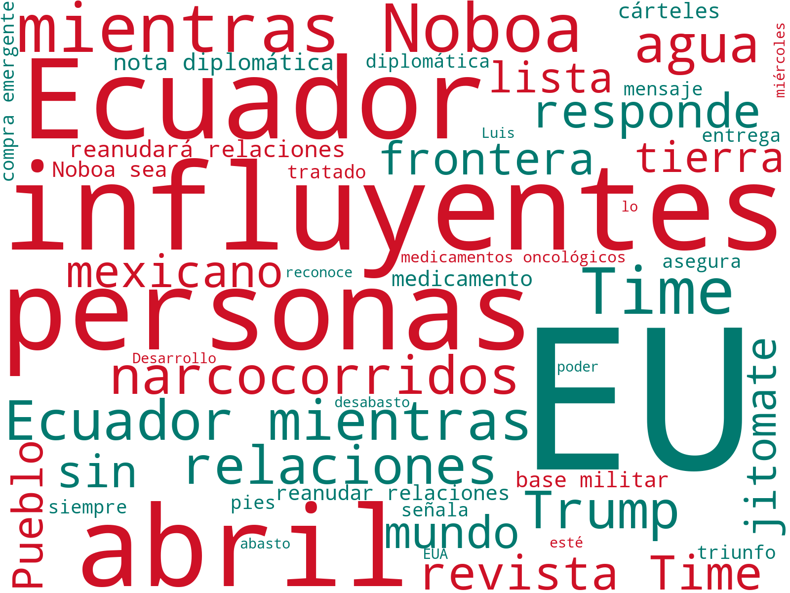 |
| 15/04/2025 |
El tema central del día es la propuesta de reforma a la Ley de Aduanas anunciada por la presidenta Claudia Sheinbaum. Esta medida busca impedir la evasión de impuestos en México, aumentando las responsabilidades de los agentes aduanales a lo largo de toda la cadena de procesos. El anuncio se realizó en el contexto de una serie de cambios regulatorios destinados a fortalecer la economía y asegurar un flujo adecuado de ingresos fiscales.
Otro tema destacado es la disputa comercial entre México y Estados Unidos en torno al jitomate. Sheinbaum ha afirmado que, a pesar de las tarifas impuestas por Washington, el jitomate mexicano sigue sin tener un sustituto en el mercado estadounidense. La presidenta ha indicado que México continuará exportando el producto, aunque los consumidores estadounidenses podrían enfrentarse a precios más altos.
Además, se ha anunciado la salida de Francisco Garduño como titular del Instituto Nacional de Migración (INM), siendo reemplazado por Sergio Salomón Céspedes a partir del 1 de mayo. Este cambio en la dirección del INM se enmarca en un contexto de diálogo permanente con Estados Unidos respecto a temas migratorios, así como en el compromiso de mantener activos los centros de atención a migrantes. |
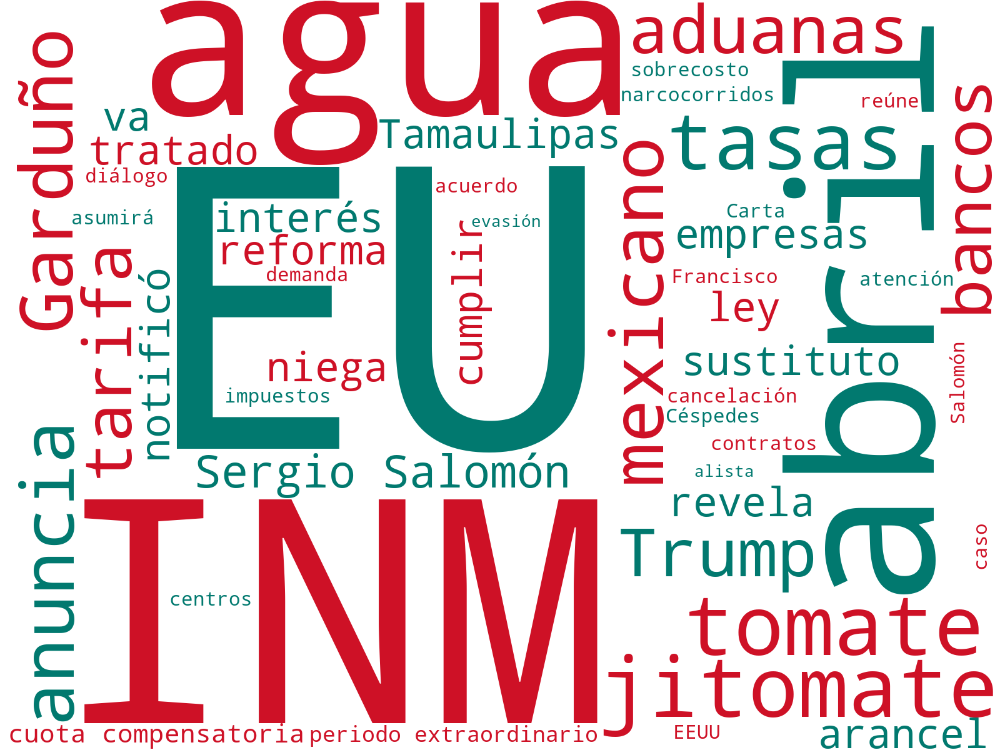 |
| 14/04/2025 |
El tema central del día es la relación entre Claudia Sheinbaum y Donald Trump, destacando una reciente llamada telefónica que ambos calificaron de "muy productiva". En esta conversación, se abordaron temas como el tráfico de fentanilo, la migración y los aranceles, con un énfasis en la reducción del 70% en el tráfico de fentanilo de México a Estados Unidos, lo que representa un avance significativo en la lucha contra el narcotráfico.
Otro tema relevante es la construcción del tren México-Pachuca, un proyecto liderado por Sheinbaum que ha mostrado avances importantes. La mandataria ha compartido imágenes de la obra, subrayando su compromiso con el desarrollo de infraestructura. Se espera que este proyecto esté listo en aproximadamente año y medio, lo que podría tener un impacto positivo en la conectividad y la economía regional.
Además, Sheinbaum ha estado activa en redes sociales, compartiendo recuerdos personales y momentos destacados de su gestión, lo que refleja su estrategia de comunicación directa con el público. Estos esfuerzos se enmarcan en su papel como figura política prominente en México, mostrando un enfoque multifacético en sus actividades diarias y su relación con líderes internacionales. |
|
| 13/04/2025 |
La presidenta Claudia Sheinbaum ha iniciado la construcción de 7,450 viviendas en Aguascalientes como parte del programa "Vivienda para el Bienestar". Este esfuerzo busca garantizar que la vivienda sea un derecho humano y no una mercancía, fortaleciendo el acceso a hogares dignos para las familias en la región. El proyecto se enmarca en la política social de su gobierno, que también incluye la creación de las “Farmacias del Bienestar” en el estado.
En otro frente, Sheinbaum ha abordado la controversia sobre los narcocorridos. Tras un incidente en un concierto en Texcoco, aclaró que estos no están prohibidos en México. No obstante, su administración busca promover contenidos que no hagan apología de la violencia, subrayando un enfoque en valores sociales responsables.
Además, Sheinbaum ha destacado los esfuerzos de México en la capacitación laboral y su impacto en la atracción de inversiones. Según la presidenta, las inversiones en el país no se deben a la mano de obra barata, sino a la especialización y capacitación de los jóvenes, lo que refuerza la competitividad del país en el escenario internacional. |
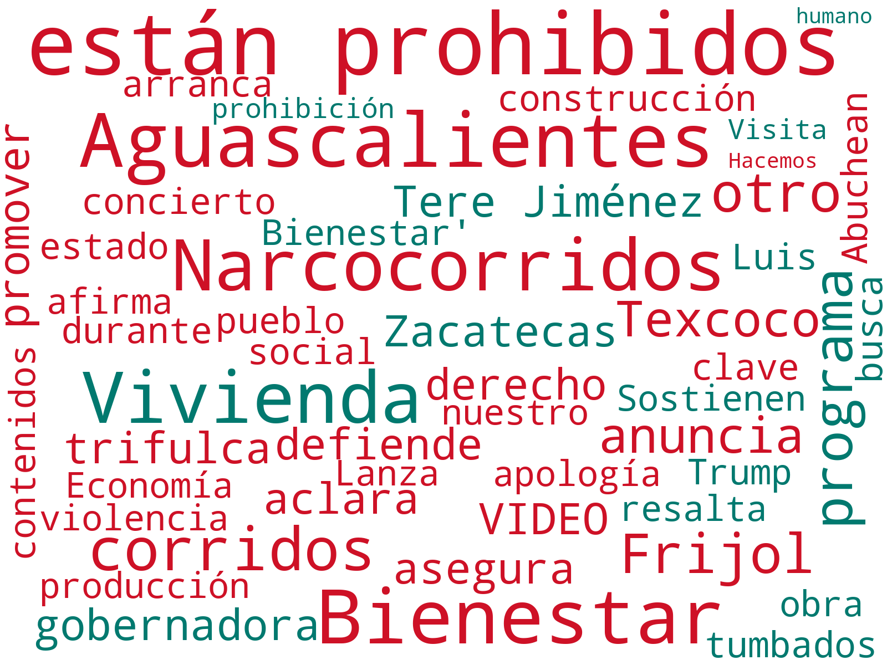 |